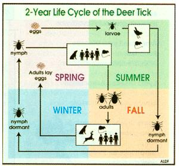
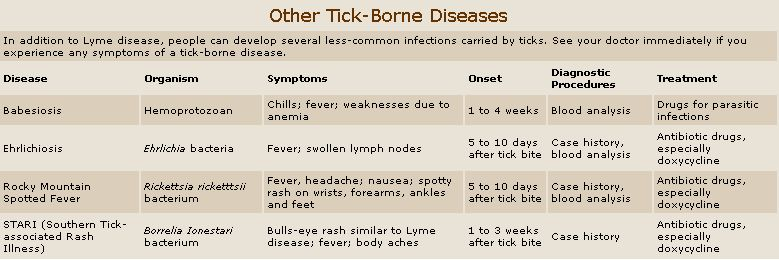

The Ixodes scapularis ticks that transmit Lyme disease in Eastern regions of the United States and Canada have a two-year life cycle. It begins in early spring, when adult females lay eggs on the ground. The eggs hatch as temperatures warm, and the miniscule larvae feed on mice and other small animals until early fall. They then molt into nymphs and rest through winter in leaf litter, under rocks or woodpiles, or anywhere they can find cover. The following spring, nymphs, which are responsible for the majority of Lyme disease cases in humans because of their small size, emerge. In the fall these nymphs molt into adults. The adults typically climb to tips of grass or onto shrubs to better grab onto deer (or another large mammal) as a place to feed and mate. Once mated, the females drop off, lay eggs, and the cycle begins again.
Mother Earth News
|
 The Tick Life Cylce |
 |
|